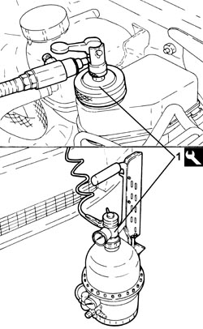
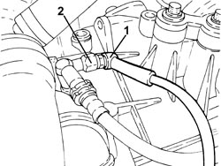

0010T67 HYDRAULIC CLUTCH SYSTEM - BLEED AIR
- Path
- Procedures > 00 MAINTENANCE > 0010 NEW VEHICLES AND MAINTENANCE > 0010T VEHICLE FLUIDS > 0010T67 HYDRAULIC CLUTCH SYSTEM - BLEED AIR
- Kind
- repair procedure (removal / refitting; the operation number is the code)
- Applies to
- engines: 1.8, 2.2, 1.9 JTD 8v, 1.9 JTD 16v; all production periods
- Interactive page
- https://sloeber94.github.io/elrnDB-fCrm/en/#/194000218
Applies to: engines: 1.8, 2.2, 1.9 JTD 8v, 1.9 JTD 16v; all production periods
1. Remove the brake/clutch fluid reservoir cap and connect the equipment to the reservoir.
Tool | Description | Function | Validity |
|---|---|---|---|
1806524000 | Brake-clutch bleeding equipment | Brake-clutch hydraulic systems bleeding |

Applies to: engines: 1.8, 2.2, 1.9 JTD 8v, 1.9 JTD 16v; all production periods
1. Remove the protective plug and connect the recovery device (pipe and reservoir) to the clutch hydraulic actuator bleed.
2. Open the bleed valve on the clutch hydraulic actuator.
- Open the fluid reservoir tap slowly.
- Wait for all the air in the hydraulic system to escape.
- Close the bleed valve on the clutch slave cylinder and refit the protective cap in its seat.

Applies to: engines: 1.8, 2.2, 1.9 JTD 8v, 1.9 JTD 16v; all production periods
- Remove the recovery device.
- Remove the bleed equipment.
Tool | Description | Function | Validity |
|---|---|---|---|
1806524000 | Brake-clutch bleeding equipment | Brake-clutch hydraulic systems bleeding |
- Check that the cluch disengages and that the gears engage properly.
- Check the fluid level in the brake - clutch reservoir is correct.
Topics that link to this page (18)
- E001 CLUTCH NOT RELEASING CORRECTLY
- E010 CLUTCH PEDAL HARDENING
- 1004B10 POWER UNIT WITH MANUAL GEARBOX - R.R
- 1004B14 POWER UNIT WITH AUTOMATIC TRANSMISSION R + R
- 1020D26 FLYWHEEL SIDE OIL SEAL COVER - R.R AND REPLACE GASKETS
- 1020D38 FLYWHEEL SIDE OIL SEAL - REPLACE
- 1024B10 ENGINE FLYWHEEL - R + R FOR VERSIONS WITH MANUAL GEARBOX
- 1810A20 CLUTCH - R + R
- 1820B20 MASTER CYLINDER (PUMP) - R + R
- 1820B30 CLUTCH HYDRAULIC ACTUATOR - R.R.
- 1820B40 HOSE FROM CLUTCH RESERVOIR TO MASTER CYLINDER (PUMP) - R + R
- 1820B48 SUPPLY HOSE TO OPERATING CYLINDER - R.R.
- 1820B56 RIGID PIPE FROM VIBRATION DAMPER TO SLAVE CYLINDER - R R
- 1820B58 CLUTCH HYDRAULIC CIRCUIT VIBRATION DAMPER - R+R
- 1820B41 HOSE FROM CLUTCH RESERVOIR TO MASTER CYLINDER (PUMP) - R.R. FOR RIGHT HAND DRIVE VERSIONS
- 1820B21 MASTER CYLINDER (PUMP) - R R FOR RIGHT HAND DRIVE VERSIONS
- 1820B52 <x>HOSE FROM MASTER CYLINDER (PUMP TO CLUTCH HYDRAULIC ACTUATOR - R&R</x>
- 2110A10 MANUAL GEARBOX AND DIFFERENTIAL - R + R